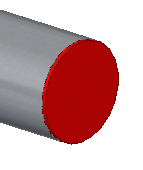
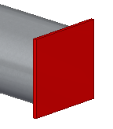
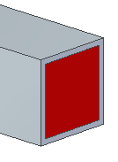
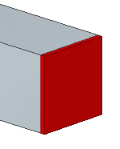
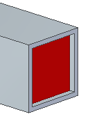
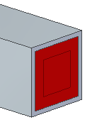
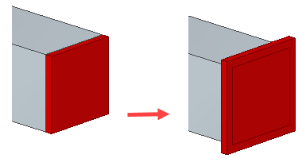
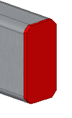
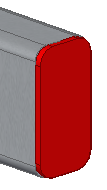

End Cap Options dialog box
- Saved settings
-
Specifies the name for a new saved setting. Selecting the arrow lists the previously saved setting names.
Saved settings enable you to save option settings for the next session.
- Save
-
Saves the information in the End Cap Options dialog box to the name displayed in the Saved settings box.
- Delete
-
Deletes the saved setting information associated with the name currently displayed in the Saved settings box.
- Material
-
Specifies the material for the end cap.
- Thickness
-
Specifies the thickness for the end cap.
- Create end caps based on frame cross section
-
When selected, creates the end cap based on the cross section of the frame.

When cleared, creates the end cap based on a bounding box surrounding the end of the frame.

- Inward
-
Extends the end cap into the frame, keeping the overall length of the frame unchanged.

- Outward
-
Extends the end cap out from the frame, increasing the overall length of the frame.

- Inset
-
Specifies the distance that an internal end cap is inset. This option is only available when the Inward option is selected.

- Offset
-
Specifies the distance between the end cap and the inner loop of the frame. Use the Offset option when creating weldments.

- Reverse
-
Increases the value of the end cap dimension in the opposite direction, so that it is larger than the frame face profile.

- Apply Corner Treatment
-
Applies a corner treatment to the end cap. These options are available for rectangular and square tubing.
- Chamfer
-
Applies a chamfer to the corners of the end cap.

- Fillet
-
Applies a fillet to the corners of the end cap.

- Corner Treatment Distance
-
Specifies the distance for the chamfer or fillet.
Note:The Apply Corner Treatment option is only available when the Create end caps based on frame cross section option is not selected.
- Save As Default
-
Saves the current dialog box settings as the default settings for future sessions.
How do I
Add a custom frame componentCreate a structural frame
Save a structural frame component
Edit frame end conditions
Edit a frame cross section
Create a frame end cap
Edit a frame end cap
Trim or extend a frame
Create frames with weld gaps
Learn more
Structural frame design workflowSaving frame components
Saving structural frame components
Look up more details
Frame commandFrame command bar
Frame Options dialog box
Creating a structural frame
Adding members to a frame
Edit End Conditions command
Edit Cross Sections command
Frame snap points
Frame End Cap command
Frame Origin command
Trim/Extend command
Trim/Extend command bar
Adding custom frame components to a local library
Creating a custom structural frame component: best practices
Defining hole locations in a frame